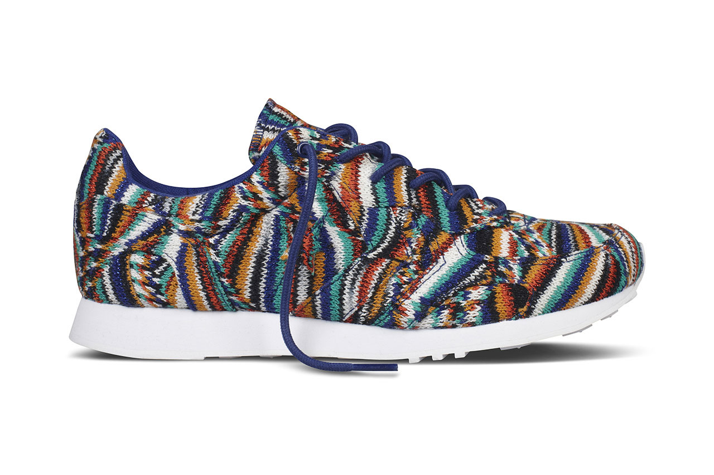
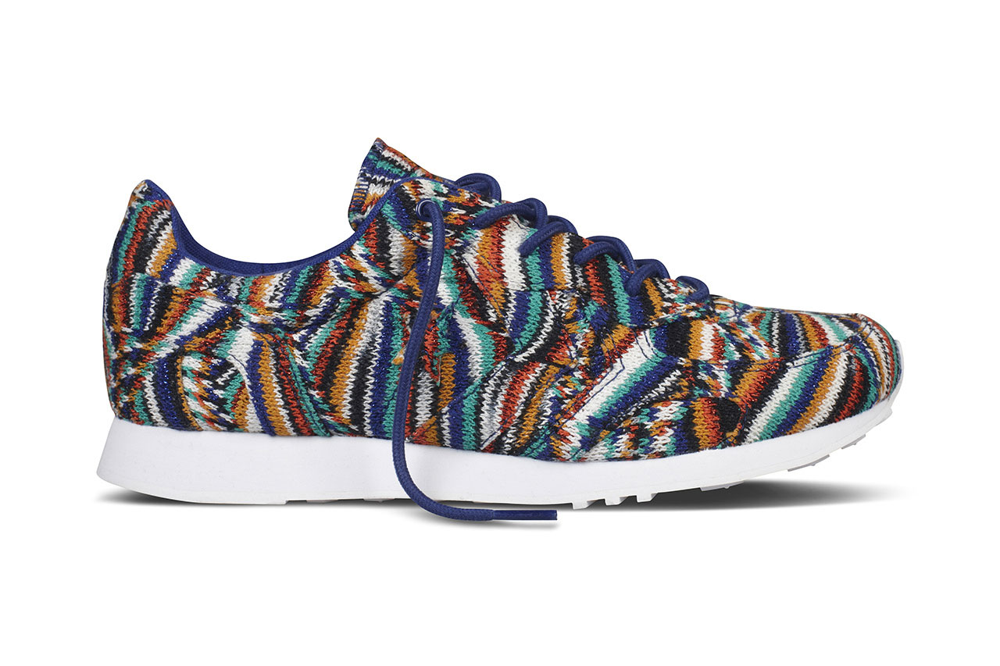
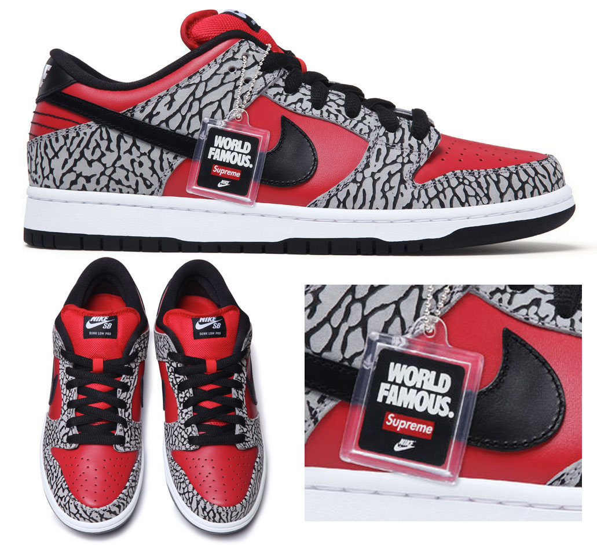
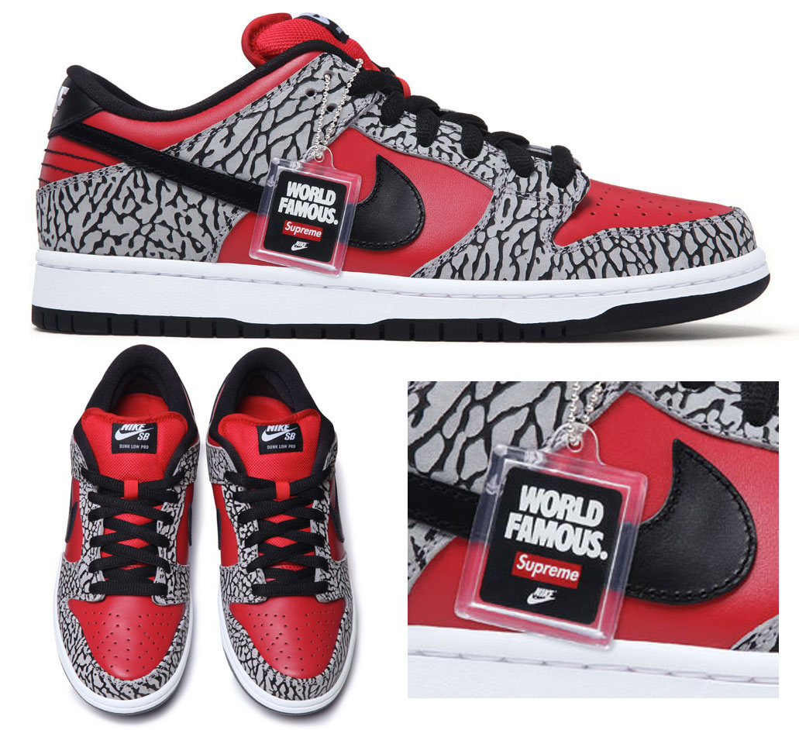
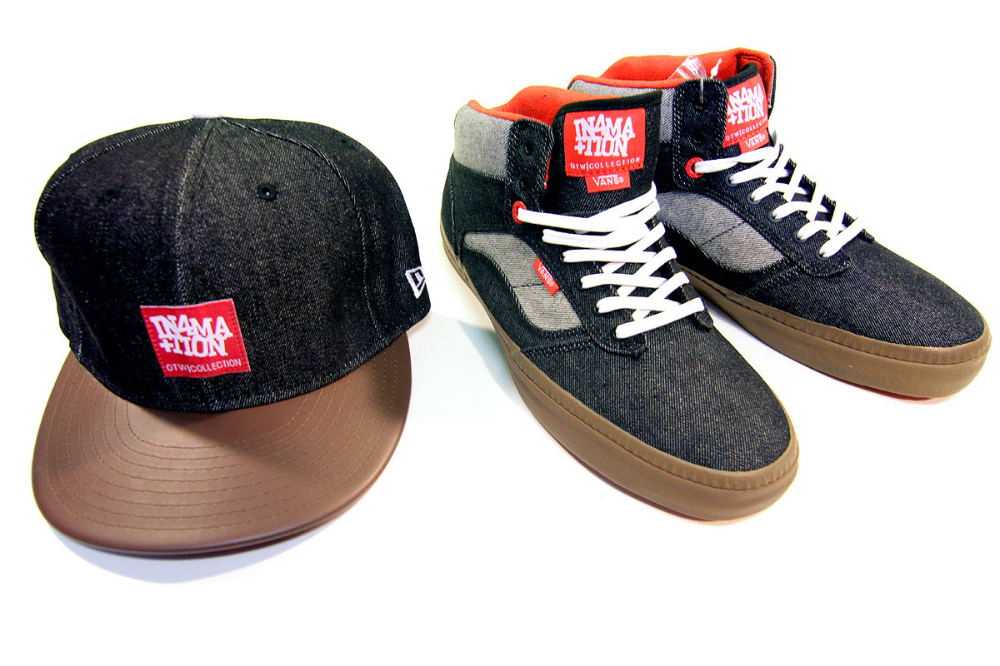
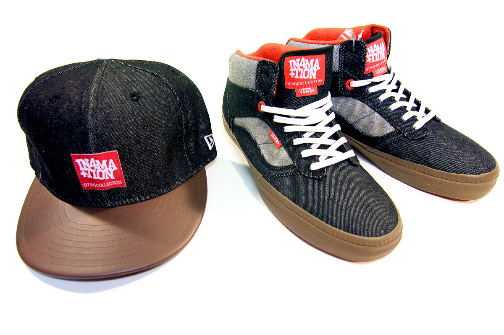

COLLABORATIONS
Missoni for Converse
After a long wait, the coveted Missoni x Converse Auckland Racer collaboration that previewed last year is finally up for grabs this Friday March 29th 2013. The limited edition collaboration features the vintage ’70s Auckland Racer running shoe in two gradient-fade colour ways – multicolour and greyscale for spring. In Missoni’s iconic multi-stitch fabric with a wool and viscose upper, premium canvas lining and white rubber soles. The runner drops in limited quantities at Missoni boutiques and select Converse retailers globally.


Supreme and Nike SB, Dunk Lows 10 Year Anniversary
Supreme have been putting out their own Nike SB Dunk Lows for a decade now so, to celebrate their 10 year milestone, they've just released this hot anniversary shoe. The scarlet red uppers feature a full-grain grey and black nubuck leather trim with embossed elephant texture, made exclusively for Supreme. The skate sneakers carry a nod to their exclusivity in the keychain tag which carries the Nike SB (the SB stands for skateboarding btw) and Supreme logos.


Vans, New Era, and In4mation
This week In4mation presents a collaborative cap with New Era to compliment the limited edition Vans OTW collaboration they launched at the end of February. This marks the first Vans OTW collaboration and to celebrate, Scion Partners and In4mation have partnered to offer consumers 10% off these exclusive products. Contrasting dark and light denim is applied throughout this Bedford silhouette along with red highlights for the inner liner and woven labels that appear around the shoe. A dark tobacco gum sole and red waffle bottom compete the shoe. A denim cap by New Era was created in the likeness of the limited edition shoe.

